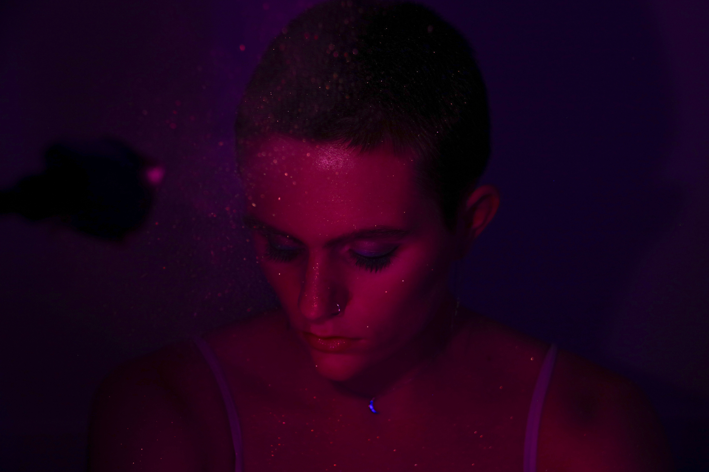

Ik ben Lenne Pottiez, ik ben 16 jaar en studeer Audiovisiule vorming op de kunsthumaniora in Antwerpen. Audiovisiule vorming is een richting waar wordt gefocust op fotografie, video, grafisch ontwerp en multimedia. Ik ben hier ingestroomd vorig jaar na dat ik 4 jaar woordkunstdrama had gestudeerd. Dit is nu mijn laatste jaar.
>